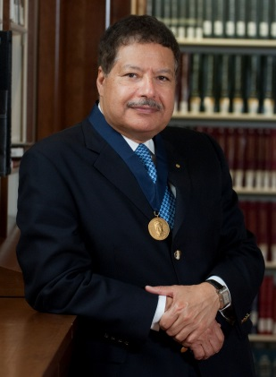
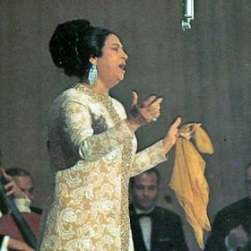
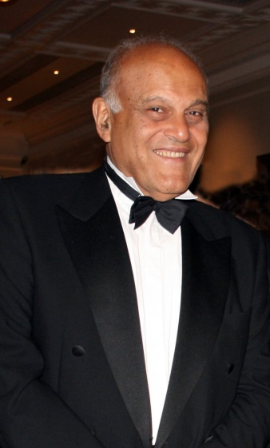
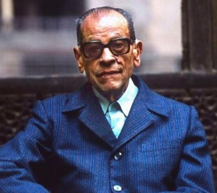
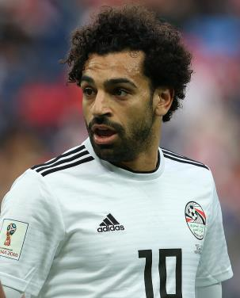

Great people from Egypt
In recognition of their achievements and the effect they had on people in their country and beyond, five personalities are presented here that i personally consider excellent ambassadors of Egypt and its people.
Ahmed Zouweil

Ahmed Hassan Zewail (Arabic: أحمد حسن زويل) was an Egyptian-American scientist, known as the
"father of femtochemistry". He was awarded the 1999 Nobel Prize in Chemistry for his work on
femtochemistry and became the first Egyptian to win a Nobel Prize in a scientific field. He was
the Linus Pauling Chair Professor of Chemistry, Professor of Physics, and the director of the
Physical Biology Center for Ultrafast Science and Technology at the California Institute of Technology.
Femtochemistry is the area of physical chemistry that studies chemical reactions on extremely
short timescales (approximately 10−15 seconds or one femtosecond, hence the name) in order to
study the very act of atoms within molecules (reactants) rearranging themselves to form new
molecules (products). In 1999, Ahmed Hassan Zewail received the Nobel Prize in Chemistry for
his pioneering work in this field showing that it is possible to see how atoms in a molecule
move during a chemical reaction with flashes of laser light.
For more on that subject, suggested video
Om Kalthoum

Om Kalsoum (Arabic: أم كلثوم) is an internationally renowned Egyptian singer.
She was given the honorific title Kawkab A Sharq (كوكب الشرق) "Planet of the Orient".
Om Kalsoum was known for her extraordinary vocal ability and style, as well as for
being one of the greatest and most influential singers of the 20th century. She sold
over 80 million records worldwide. Om Kalsoum is considered a national icon in her
native Egypt and has been dubbed as The voice of Egypt and Egypt's fourth pyramid.
She remains one of the most revered singers in Egypt and the entire Arabic-speaking
world
Enjoy some of her great songs
Magdi Yacoub

(Sir) Magdi Habib Yacoub (Arabic: د/مجدى حبيب يعقوب) is an Egyptian-British
cardiothoracic surgeon. He is Professor of Cardiothoracic Surgery at Imperial
College London. Yacoub is known for establishing heart transplantation in the UK.
He pioneered techniques that include tissue engineering heart valves, novel left
ventricular assist devices, and wireless sensors for heart patients. In addition,
he developed a procedure for switching heart vessels of babies born with congenital
heart defects. Considered a pioneer in his field, Magdi Yacoub is hailed as one of
the world's most respected cardiac surgeons. He founded the UK-based children's
charity ‘Chain of Hope’ which treats children with correctible cardiac conditions
from war-torn and developing countries. Chain of Hope has also established training
and research programs in Egypt and other Middle Eastern countries. He established
the Magdi Yacoub Heart Center in Aswan, Egypt. The Center’s mission is to offer
state-of-the-art medical services to the Egyptian people, particularly the
underprivileged and vulnerable age-groups, free of charge
Magdi Yacoub Heart Foundation website can be accessed from here
Naguib Mahfouz

Naguib Mahfouz (Arabic: نجيب محفوظ) was an Egyptian writer who won the 1988 Nobel
Prize for Literature. He is regarded as one of the first contemporary writers of
Arabic literature to explore themes of existentialism. He published 34 novels,
over 350 short stories, dozens of movie scripts, and five plays over a 70-year
career. Many of his works have been made into Egyptian and foreign films
Mohamed Salah

Known not only for his football skills, but also for his humble personality.
Mo Salah’s awards include the PFA Players’ Player of the year, the Premier League’s
Golden Boot, the FWA footballer of the year and more.
Watch Mo Salah in action here